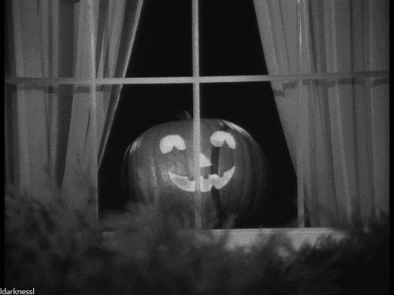

Pretty cool artist named JSOT made this skateboarding ghost, really talented guy.
My names Tonia Toribio Sanzo and during the day I am a build programmer, and at night I try to program videogames, skateboard, and learn different computer science topics. I'm currently studying my 3D mathematics and the psalms of David. Link to some wallpapers, Trust God Desktop Wallpaper Mark 8:36 Desktop Wallpaper sketburd@gmail.com 